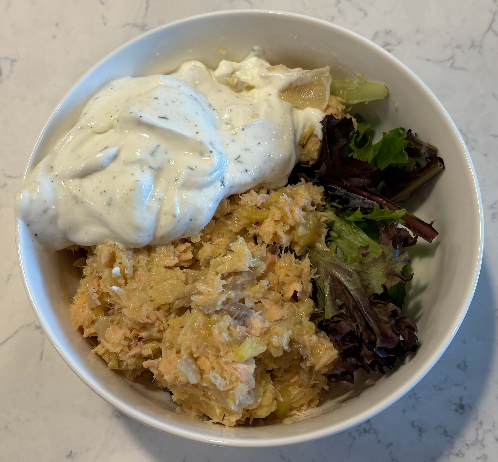

Home
Salmon Potato Salad

6 servings
Prep: 20 min, Cook: 20 min
Ingredients
- 4-5 potatoes, I used 3 cups of mashed potatoes
- 450g/2cups canned or fresh cooked salmon
- 1 lemon, juice and zest of
- 2 tbsp parsley or dill
- salt and pepper to taste
- spring mix of greens
- 2 tbsp olive oil
For the sauce
- 125ml/1/2 cup Greek yogurt
- 1 tbsp chives
- 1 clove garlic, pressed
- 1 tsp lemon juice
- salt and pepper to taste
Steps
- In a large mixing bowl combine mashed potatoes and salmon while making sure no skin or bones end up in there as well. Add the lemon zest to the mixture, juice the lemon and pour it in as well along with chopped parsley. Mix everything well, add a pinch of each salt and pepper.
- For the sauce mix yogurt, lemon juice, chopped chives and minced garlic in a small bowl. Add salt and pepper to taste. Let it sit for at least 15 minutes before serving for the flavours to blend.
- Serve over spring mix.
You can also fry the salmon into patties
- When making the salmon mixture crack an egg into it and 1 tbsp flour.
- Use an ice cream scoop to grab the same amount of salmon mix everytime. Roll it in flour and flatten it into a patty shape.
- You can pan fry or air fry
- Pan fry salmon cakes in hot olive oil until golden and crunchy on the outside.
- nstead of pan frying, preheat your air fryer to 240C/500F spray the salmon cakes with an oil spray and arrange in the basket of the air fryer, cook for 8-9 minutes until golden on the outside.